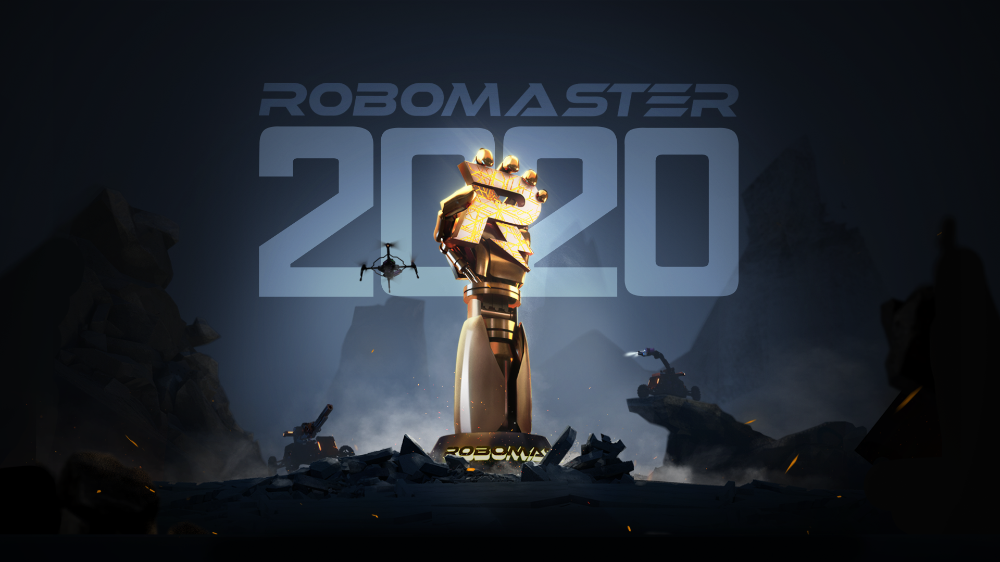

参赛攻略
报名篇
1. 了解 RoboMaster
2. 战队组建
3. 报名参赛
备赛篇
1. 招新攻略
2. 技术培养
3. 团队管理
4. 团队建设
5. 团队运营
比赛篇
1. 物资打包和邮寄
2. 差旅安排
3. 赛场文化
4. 比赛机制
5. 比赛流程
6. 参赛总结
参赛攻略
Docs
»
欢迎来到 RoboMaster 参赛攻略！
View page source

欢迎来到 RoboMaster 参赛攻略！
¶
报名篇
1. 了解 RoboMaster
1.1. 赛事架构
1.2. 官方渠道介绍
1.2.1. 论坛&官网
1.2.2. 官方联系方式
1.2.3. 官方宣传渠道
1.2.4. 官方群
1.3. 建议获取内容
1.3.1. 比赛手册
1.3.2. 视频
2. 战队组建
2.1. 发起过程
2.2. 依托组织
2.3. 战队架构
2.3.1. 确定骨干成员
2.3.2. 整体架构
2.3.3. 研发组织架构
2.4. 资金
2.5. 场地
2.6. 物资
2.6.1. 实验室装配
2.6.2. 官方物资
2.6.2.1. 官方物资赠予说明
2.6.2.2. 官方物资购买说明
2.6.3. 裁判系统申请借用
2.6.4. 场地道具出售与赠予
2.6.5. 物资预算及管理
3. 报名参赛
3.1. 关注参赛信息
3.1.1. 报名须知
3.1.2. 联动组委会
3.1.3. 报名系统使用教程
备赛篇
1. 招新攻略
1.1. 招新流程
1.2. 招新内容
1.3. 招新方向
1.4. 设置面试环节
2. 技术培养
2.1. 规则概览
2.2. 开源资料
2.3. 核心需求分析
2.4. 方案制定与测试
2.4.1. 方案制定
2.4.2. 测试
3. 团队管理
3.1. 人员管理
3.1.1. 明确分工
3.1.1.1. 整体架构
3.1.1.2. 研发组织架构
3.1.2. 建立梯队
3.1.3. 培训体系
3.1.3.1. 培训重点
3.1.3.2. 验收培训效果
3.1.4. 操作手选拔
3.1.5. 战术分析
3.2. 项目管理
3.2.1. 项目分析
3.2.2. 资金把控
3.2.3. 进度把控
4. 团队建设
4.1. 制定目标
4.1.1. 整体目标
4.1.2. 阶段目标
4.2. 建设战队文化
4.2.1. 精神文化
4.2.2. 物质文化
4.3. 搭建共享平台
4.3.1. 搭建用途
4.3.2. 信息整理建议
4.3.3. 团队管理协作工具
4.4. 人员传承管理
4.4.1. 建立人才库
4.4.2. 新赛季人才选拔标准
4.5. 建立制度
4.5.1. 考勤制度
4.5.2. 周报制度
4.5.3. 奖惩制度
4.5.4. 考核制度
4.5.5. 会议制度
4.5.6. 财务制度
4.5.7. 团建制度
4.5.8. 实验室安全制度
4.6. 对外交流
5. 团队运营
5.1. 宣传
5.1.1. 宣传团队的组建
5.1.2. 相关资料的积累
5.1.3. 自有媒体运营指引
5.1.3.1. 宣传的整体策略
5.1.3.2. 招新宣传为例展示运作
5.1.4. 实体活动的组织
5.1.5. 实体活动的组织
5.2. 招商
5.2.1. 资源盘点
5.2.2. 招商资料
5.2.3. 准备工作
5.2.3.1. 人员选拔
5.2.3.2. 计划制定
5.2.3.3. 资料筹备
5.2.4. 联系商家
5.2.4.1. 触达方式
5.2.4.2. 邮件礼仪
5.2.4.3. 会议记录
5.2.4.4. 跟进表格
5.2.4.5. 应对失败
5.2.5. 合同签订及权益落实
5.2.5.1. 权益审核
5.2.5.2. 合同签订
5.2.5.3. 权益管理
5.2.5.4. 关系维护
5.2.5.5. 成功案例
比赛篇
1. 物资打包和邮寄
1.1. 比赛场地
1.2. 建议打包物资
1.3. 内地队伍方案
2. 差旅安排
2.1. 出行
2.2. 餐饮
2.3. 住宿
2.4. 海外队伍特别提示
3. 赛场文化
3.1. 战队形象
3.2. 战队记录
3.3. 参赛队交流
4. 比赛机制
5. 比赛流程
5.1. 场地报到
5.2. 比赛日流程
5.3. 单场比赛流程
6. 参赛总结
6.1. 赛季总结
6.2. 资料开源
Indices and tables
¶
索引
模块索引
搜索页面